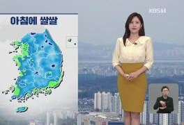

[내일날씨] 전국 흐리고 비…해상에선 돌풍에 천둥·번개도
화요일인 18일 전국이 대체로 흐리고 비가 내리겠다. 기상청은 이날 전국에 비가 내리고 낮에 중부지방부터 그치겠다고 예보했다. 늦은 오후에는 남부지방에서도..
[출근길 날씨] 오전까지 수도권·충청 황사…밤에 경기·강원 비

바다의 물결은 동해 먼바다와 서해 먼바다에서 최고 3m 안팎으로 높겠습니다. 내일 비는 늦은 오후에 대부분 그치겠습니다. 날씨 전해드립니다. 최현미 기상캐...
관련뉴스 전체보기>
4월 중순 부산 우박 내려...날씨 변덕에 시민 '깜짝'
16일 오후 부산 일부 지역에 우박이 내렸다. 기상청 등에 따르면 이날 오후 2시부터 부산에 비가 내린 가운데, 금정구와 동래구, 부산진구 등 일부지역에는 30분...
[날씨] 변화무쌍 봄 날씨...요란한 비바람 뒤 초여름 더위
오늘 밤부터 내일까지 초속 20m 안팎의 돌풍을 동반한 비가 내리겠는데요, 비가 그치고 나면 서울에는 때 이른 초여름 날씨가 나타난다고 합니다. 기상·재난 기자.